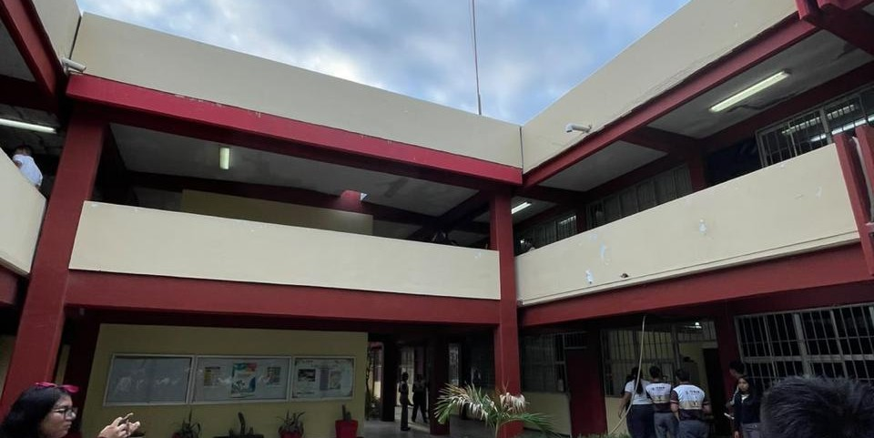

Vista hacia la dirección desde una zona inferior


Instituto Tamaulipeco de Capacitación para el Empleo (ITACE) es una institución pública de nivel medio superior en Tamaulipas que ofrece bachillerato tecnológico con título de técnico profesional y cursos de capacitación para el trabajo.
Cómo inscribirmeSomos una comunidad educativa que impulsa el desarrollo académico, técnico y personal de nuestros estudiantes. A través de esta página queremos compartir nuestras actividades, proyectos y experiencias, mostrando aquello que representa al ITACE.
Conoce más sobre nosotros →
El ITACE es un organismo público descentralizado del Gobierno de Tamaulipas, creado en 1984 por decreto del Congreso del Estado para responder a las necesidades del sector productivo y de servicios.
En 1991 amplió su propósito e incorporó carreras de educación media superior. Hoy cuenta con planteles en Victoria, Altamira, Reynosa y Matamoros.
El plantel Reynosa atiende sobre todo a jóvenes del municipio de Reynosa.
Conoce las áreas de formación técnica que ofrece el plantel Reynosa.

Aprenderás cómo funcionan las máquinas y los equipos utilizados en las fábricas, a identificar fallas y a realizar tareas de mantenimiento.

Conocerás el funcionamiento de los automóviles y aprenderás a detectar fallas, revisar sus sistemas y realizar mantenimiento y reparaciones.

Aprenderás a crear carteles, anuncios, logotipos e ilustraciones utilizando herramientas digitales para comunicar ideas de forma visual.
Aprenderás sobre la protección de computadoras, redes y datos, así como la identificación de riesgos y la prevención de amenazas digitales.

Conocerás los microchips y otros componentes electrónicos presentes en muchos dispositivos, además de los circuitos y su funcionamiento.

Explorarás cómo se desarrollan sistemas que analizan información, reconocen patrones y ayudan a resolver problemas mediante tecnologías inteligentes.

Aprenderás cómo se organizan los inventarios, el almacenamiento y el transporte de productos para que lleguen a su destino de manera eficiente.
Cada especialidad te ofrece la oportunidad de descubrir nuevos conocimientos y desarrollar habilidades para tu futuro profesional.
El ITACE promueve actividades complementarias que permiten a sus estudiantes desarrollar habilidades, descubrir sus talentos y participar en experiencias fuera del aula.
Danza folclórica, dibujo, escultura, oratoria, ajedrez y rondalla.
Actividad que fomenta la disciplina, la coordinación y el trabajo en equipo.
Espacio para desarrollar la creatividad y explorar la tecnología mediante proyectos.
Fútbol femenil y varonil, así como voleibol femenil y varonil.
Actividad orientada a fortalecer la disciplina, la responsabilidad y el compañerismo.
La disponibilidad de las actividades puede variar según el ciclo escolar. Para conocer cuáles se encuentran activas, consulta directamente con el plantel.
A través de su Unidad de Capacitación, el ITACE Reynosa ofrece cursos dirigidos al público en general para adquirir conocimientos prácticos y desarrollar nuevas habilidades.
Cursos de computación y Excel por niveles. También puedes consultar la disponibilidad de Canva.
Capacitación en el idioma para diferentes niveles, según los grupos disponibles.
Cursos de uñas, sujetos a la oferta de capacitación de la unidad.
Entre los cursos reportados anteriormente se encuentran barbería, repostería, globoflexia y elaboración de piñatas.
Los cursos, horarios, costos y requisitos pueden cambiar de acuerdo con la programación. Consulta la oferta vigente directamente con la Unidad de Capacitación Reynosa.
Consultar cursosConoce nuestras especialidades técnicas y descubre las oportunidades que el ITACE Plantel Reynosa tiene para ti.
Si deseas ingresar, consulta los medios oficiales para conocer las próximas convocatorias, fechas y requisitos del proceso de admisión.
Consultar convocatoriaLas fechas y los requisitos dependen de la convocatoria vigente.


Plantel Reynosa
Calle Octava y Zaragoza No. 515
Col. Prolongación Las Cumbres
C.P. 88745, Reynosa, Tamaulipas
Horario de atención:
Lunes a viernes: 7:00 a.m. - 6:30 p.m.
Teléfonos
(899) 924-01-84
(899) 925-24-03
(899) 925-23-86
Correo del plantel
Encargada del despacho de la dirección
C. P. Martha Gabriela Reyes Anaya
Domicilio
Blvd. Emilio Portes Gil No. 1836, C.P. 87039, Cd. Victoria, Tamaulipas
Teléfono
Sitio oficial